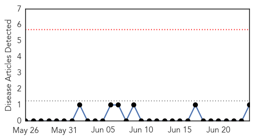
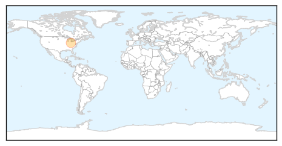
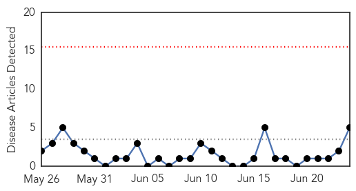

Mumps
30-Day Web Trend
0 alerts, 0 warnings

30-Day Twitter Trend
0 alerts, 0 warnings

Article Locations
Article Confidences

Top Articles:
Top Tweets:
-
No tweets found for Jun 24, 2014
Hepatitis
30-Day Web Trend
0 alerts, 0 warnings

30-Day Twitter Trend
0 alerts, 0 warnings

Article Locations

Article Confidences

Top Articles:
- 0.654
- Fighting for Their Lives: Economist Intelligence Unit Report Finds Patient Groups Lead Global Efforts to Address Hepatitis C
- 0.638
- Fighting for Their Lives: Economist Intelligence Unit Report Finds Patient Groups Lead Global Efforts... -- BEERSE, Belgium, June 24, 2014
- 0.625
- Fighting for Their Lives: Economist Intelligence Unit Report Finds Patient Groups Lead Global Efforts to Address Hepatitis C
- 0.621
- Fighting for Their Lives: Economist Intelligence Unit Report Finds Patient Groups Lead Global Efforts to Address Hepatitis C
- 0.566
- Homeland Security Sec: Feds Screening Illegals for 'Contagious Diseases'
Top Tweets:
-
No tweets found for Jun 24, 2014